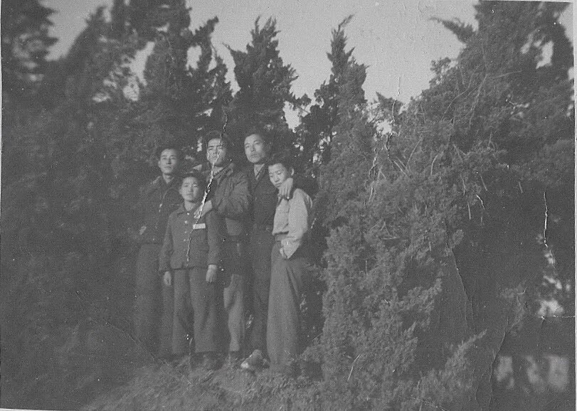
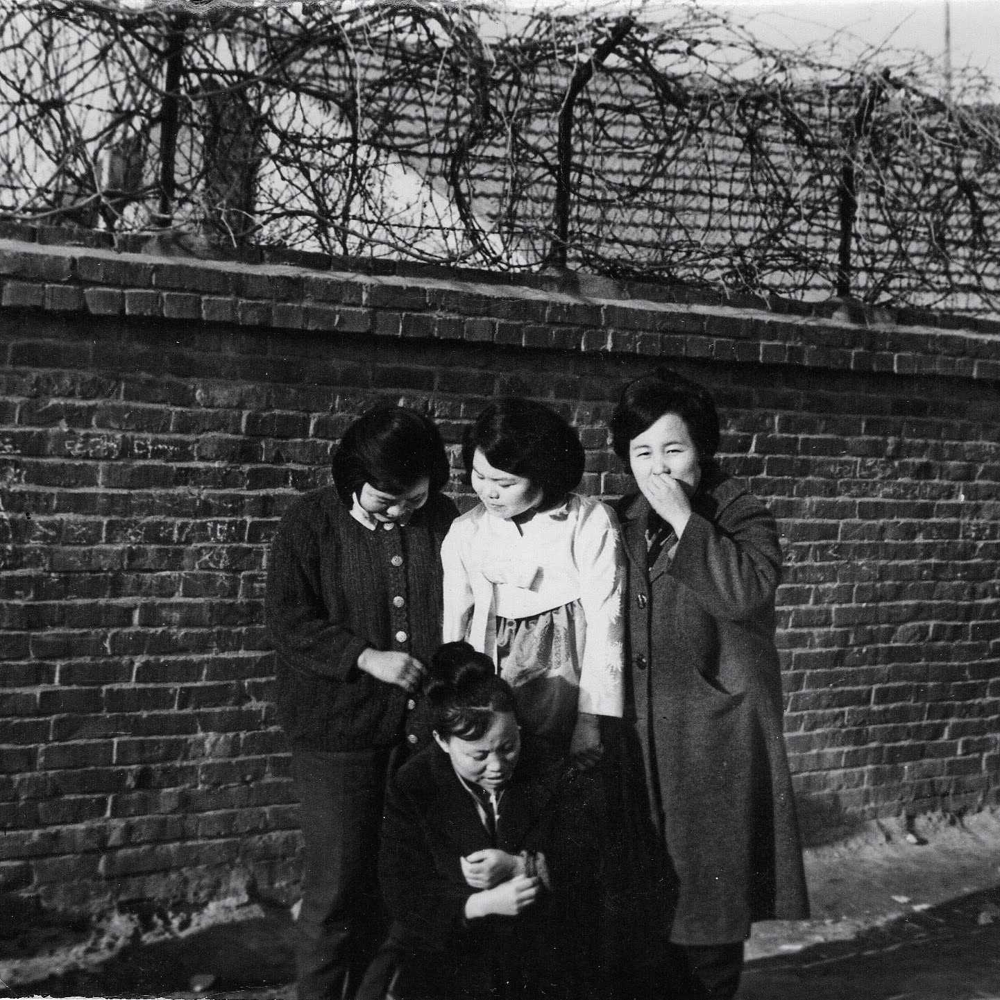

My mother was an avid consumer of all things from and about Korea - that included Korean Popular Entertainment. I believe that eased her longing for both Koreas, North and South.
She would watch the daily KBS News, and also keep up to date on popular celebrities, (연예인, 탤런트) or singers.
I remember, growing up, she would rent a dozen or so VHS tapes to view her favorite series, 연속극(連續劇)
Although I watched few episodes of Jewel in the Palace (대장금/大長今) and Moon Embracing the Sun (해를 품은 달) I resisted her invitation to watch those programs with her since it took a considerable time and commitment.
And I also knew they were well written and acted and their period customs were both accurate and well made.
So I avoided watching them, knowing how addictive they were.
My standard reply was,
I am already involved in a real life Korean-drama in this family.
Why do I want to watch another on TV?
She knew more about the Korean entertainment scene than most people one-half or one-forth her age.
And her enthusiasm for the Korean Wave preceded the general public by a decade or two
However, when she moved to Utah in her late 70s, she lost her network of friends who kept her updated and who used to share those DVDs and VHSs and her access to her familiar or go-to Korean TV channels and programs, available via the Dish TV.
She never got adjusted to internet-based programming.
My son got her the Google TV and that helped her with YouTube and other offerings.
Then she and I began hearing about a drama from friends in far away places and subsequently read up on a world-wide phenomenon, known as CLoY, Crash Landing on You (사랑의 불시착).
Before I knew about the story line, my wife informed me that the leading character was someone she liked based on Secret Garden series
I knew Ms. Son from the movie, Classics.
The story line, set in today’s Korea dealt with defectors crossing DMZ back and forth - a dream for those from the North.
This sounded like a must-see Korean Drama.
So my mom and I started watching the series together.
Fell immediately for the characters, especially those depicting villagers in North Korea and Korean People’s Army (조선인민군), in addition to leading characters.
For those supporting cast members spoke just like my mom and dad, my uncles and aunts, with the Northern Accent.
My extended family, when they gather, they subconsciously let go of decades-long practice of using the Southern Accent.
Endearing me further was the scene and practices of a life in North Korea, that was closer to the Korea I grew up in the 60s and 70s.
The black market scene brought back memories of those days when everything seemed to be in short supply and beyond the affordability of most people.
Whenever I go back to Korea, I am taken back by the growth and affluence.
Most of the time, I feel like I am from a developing country.
Everyone seems to be a well dressed model and have jumped out of magazines or they can readily jump into a Korean Drama or a number of “Korea’s Got Talent” like shows.
It was a rare treat to see North Koreans depicted with care and accuracy that made me feel that there were distant cousins and other family members that I may meet in the future.
And that there may be a few areas in common that we can begin the conversation.
My mom and I finished the series in a matter of days, often viewing 2 to 3 episodes at a time.
For a brief time, the series took us to another place and time and brought us a hope for possible unification and a chance to unite as a family.
That was two years ago.
Now that my parents have departed this life, there is little to no prospect of uniting with my parents’ family in North Korea.
Even if the boundaries were opened tomorrow and we could travel to the hometown or ancestral homes of my parents, would the Kang/Hwang family still be there?
By miracle that we were able to locate the family, how would we begin the conversation?
- How do you make up for 73 years of no communications?
- Are there any areas of common understanding?
- How would writers of Korean Dramas write the script for this kind of reunion?
I have an uncle, my dad’s youngest brother, in his 80s.
He is the last link, on the Kang side, with North Korea.

On my mother’s side, there are 3 surviving younger sisters in South Korea.

My mother has one more sister in North Korea, she is 1.5 years younger than my mother.
She may still be alive, but there has been no confirmation of her whereabouts for nearly 75 years.
Crash Landing on You romanticized the 2 sides of a nation still at war.
Providing a momentary glimpse and a hope that the separated family may once again be united.
With each passing year, the generation that experienced the Korean War is dwindling.
Those that experienced the lasting effect of war, poverty, death and separation of family are aging quickly.
I do not know if unification will ever take place in the peninsula of Korea.
Even if it did, I don’t how the families will be reunited and reacquainted.
Even for the writers of CLoY, it would be a challenge to write scripts for these improbable re-unions
Although it is highly unlikely, I will pray for divine intervention to take place in my lifetime.
For, If any nation or people can pull this off, it is the people of Korea, both North and South.
They have demonstrated their hard work, post Korean War.
They created and experienced the economic miracles that started during the 70s and 80s.
Now we need a spiritual miracle, a return to god.
The God of Abraham, Isaac and Jacob, who was renamed Israel1. link
God Almighty, through thy servants, thou hast revealed the truth to the people of Korea, a little by little.
Thou hast also rescued and preserved this country, called Korea, numerous times.
Will thou hasten the restoration of that nation once more, as one, under God.
That we may once again call one another brothers and sisters, which we are.
Wilt thou move the hearts and minds of leaders of 2 Koreas and those nations that have controlling interest in Korea.
Pray that the unification can take place in my lifetime.
If it is not thy will currently, will thou reveal steps, send dedicated people, and name sacrifices necessary for the unification to occur in my lifetime or in my children’s lifetime.
Pleading on behalf of my parents’ generation and also for the rising generation.
Gratefully,
A son of North Korean Parents May 2023
Footnotes
Because Jacob was faithful, the Lord gave him the special name of Israel, which means “one who prevails with God” or ”let God prevail” (Bible Dictionary,”Israel,” 708). Jacob had twelve sons. These sons and their families became known as the twelve tribes of Israel, or Israelites (see Genesis 49:28)↩︎